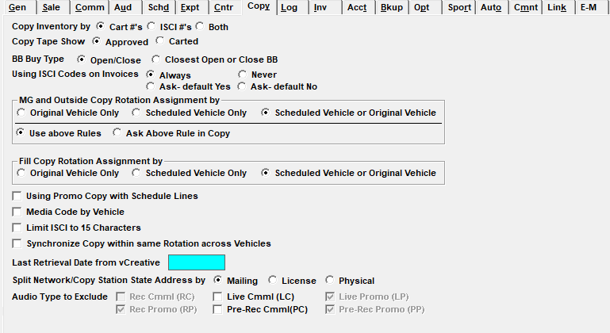

Copy

Copy Inventory by Cart #’s, ISCI #’s, or Both: This determines whether you will be using carts, ISCIs, or both. Carts are created by the network and can either be generated automatically or manually. ISCIs come from the agency.
Copy Tape Show Approved or Carted: Determines how Copy is tracked and Approved.
- Approved: Allows you to approve the commercial content before it airs in the Copy Inventory screen. All inventory not approved is listed on the Unapproved Copy Report.
- Carted: Allows you to keep track of the carted and uncarted copy by activating the “Tape Carted” field. If a commercial has not yet been carted, it can still be used in rotations but will appear in red text.
BB Buy Type: Separate Copy can be assigned for the ordered Spot and Open and/or Close Billboards. This question determines the copy assignment method
- If set to “Open/Close”, you can assign separate copy for Open and Close Billboards.
- If set to “Closest Open or Close BB”, the system will assign the copy equally to Billboards. This is used if your Billboards are independent of avails.
Using ISCI Codes on Invoices: This question determines whether ISCI codes will appear on the invoice. They can be set to always or never appear, or a default answer can be set in the Advertiser and Agency screens that you can override. If an ISCI begins with “WW_”, and an agency advertiser requires those letters to be excluded from their invoice, this setting must be set to either “Ask - Default Yes” or “Ask – Default No”, and the Agency or Direct Advertiser must have the “ISCI on Invoice” field set to “W/O Leader”.
MG and Outside Copy Rotation Assignment By: This question dictates how copy rotations will be assigned to spots moved as Makegoods or Outsides.
- Original vehicle only: regardless of where a spot is moved, the copy rotation will always come from the original vehicle.
- Scheduled vehicle only: a rotation must be defined for the vehicle onto which the spot has been moved. When selected, the Copy Screen defaults to always show makegood vehicles in the vehicle drop down.
- Scheduled vehicle or original vehicle: means that copy assignment will first look to see if a rotation has been defined for the scheduled vehicle, if a rotation does not exist for the scheduled vehicle, it will use the rotation for the original/ordered vehicle.
- Use Above Rules: Will always follow whatever copy selection is defined.
- If “Ask Above Rule in Copy” is selected, these option will be available on the Copy Screen during rotation input.
Fill Copy Rotation Assignment By: Determines how copy rotations will be assigned to Fill spots.
- Original Vehicle Only: regardless of the vehicle in which the Fill spot was created, the copy rotation will always come from the original vehicle.
- Scheduled Vehicle Only: a rotation must be defined for the vehicle on which the Fill spot was created.
- Scheduled Vehicle or Original Vehicle: copy assignment will first look to see if a rotation has been defined for the scheduled vehicle, if a rotation does not exist for the scheduled vehicle, it will use the rotation for the original/ordered vehicle.
Using Promo Copy with Schedule Lines: Allows Live, Recorded, and Pre-Recorded copy for Promo spots to be selected on schedule lines in the Proposal and Order screens.
Media Code by Vehicle: When checked on, an additional field appears in the Media Definition Screen, which allows Media Codes to be assigned to individual vehicles.
Limit ISCI to 15 Characters: Places a maximum of 15 characters for ISCI codes. If unchecked, the ISCI is limited to 20 characters.
Synchronize copy within same rotation across vehicles: By default this option is unchecked. When it is checked on, and a rotation is created using the "[Several]" vehicle option (in which multiple vehicles are grouped together on a single rotation), and the rotation has more than one piece of copy in the Rotation Instructions area, the "Next" pointer that determines what piece of copy gets assigned next when assigning copy will be advanced independently for each vehicle. The “Next” pointer can also be adjusted individually for each vehicle.
Last Retrieval Date from vCreative: This date is automatically updated when the vCreative interface is used. The date is used to determine what data will be retrieved.
Split Network/Copy Station State Address By Mailing, License, or Physical: This setting is used to determine whether the state from the station mailing address, license address, or physical address should be used as the state for determining what region a given station belongs to when the copy region uses the state for the region definition. The default setting is the mailing address. (This option is only available on version 7.1 and above. On version 7.0 and prior versions, the station mailing address is automatically used.)
Audio Type to Exclude: These checkboxes are used to specify which audio types should be excluded from use. An audio type that is excluded from use will not be available to select from the audio type field when entering a contract line. The available audio types are Recorded Commercial (RC), Recorded Promo (RP), Live Commercial (LC), Pre-Recorded Commercial (PC), Live Promo (LP), and Pre-Recorded Promo (PP). Recorded Commercial is always used, and is therefore always grayed out and unavailable for exclusion. The promo choices are only available if the “using promo with schedule lines” option is checked on. The Live and Pre-Recorded options are only available if “Live Copy” is enabled (in Traffic Site Options, on the Options tab, System Options section).